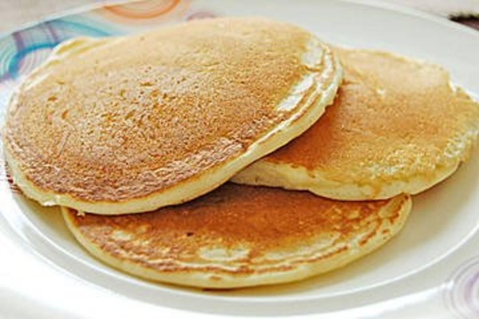

Pancakes

Description
This is a bulk whole wheat pancake mix that my family loves, and it is very easy to make!
It also makes good waffles ;)
Ingredients
- 5 cups whole wheat flour
- 3 cups unbleached all-purpose flour
- 1/2 cup white sugar
- 2 1/2 tablespoons baking powder
- 4 teaspoons baking soda
- 4 teaspoons salt
Steps
-
Whisk whole wheat flour, all-purpose flour, sugar, baking powder, baking soda and salt together in bowl.
-
Mix one cup of pancake mix, one cup of milk, one egg and two tablespoons of oil together in a large bowl.
-
Cook pancakes on a hot griddle and serve with your choice of toppings.